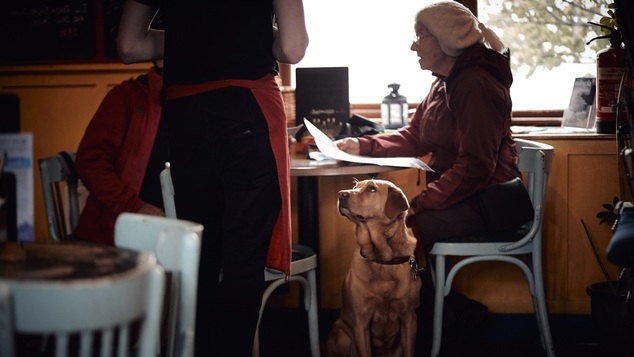
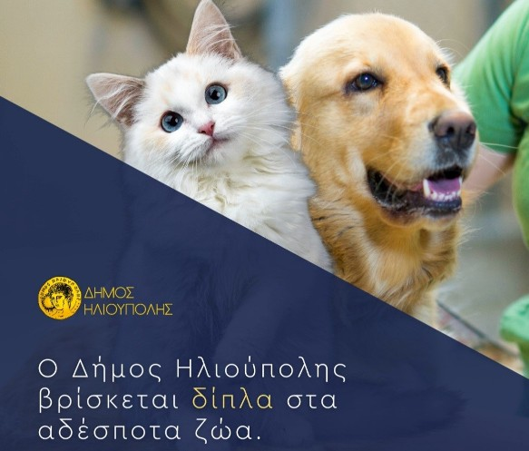
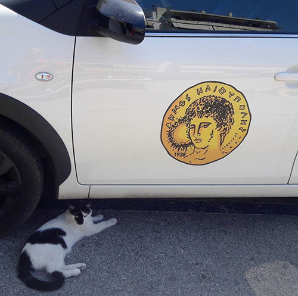

Θεραπεία μέσω...σκύλων

Πρωτοποριακό πρόγραμμα θεραπείας μέσω ζώων εφαρμόζει το Ψυχιατρικό Τμήμα του Στρατιωτικού Νοσοκομείου 424. Πρόκειται για το μοναδικό νοσοκομείο στη Θεσσαλονίκη που εφαρμόζει εδώ και ένα χρόνο αυτό το πρόγραμμα σε συνεργασία με την εθελοντική ομάδα Therapy Dogs. Το νοσοκομείο συνεργάζεται με την εθελοντική ομάδα Therapy Dogs και οι ομάδες αποτελούνται από κατά μέσο όρο 20 ασθενείς, δύο συνοδούς με δύο ή τρεις σκύλους θεραπείας και δύο ειδικούς ψυχικής υγείας από το προσωπικό του Τμήματος.
Διαβάστε πλήρως
Το δικαστήριο εξέδωσε απόφαση δικαίωσης για τους φροντιστές των αδέσποτων ζώων

Απόφαση δικαίωσης των φροντιστών των αδέσποτων ζώων από το αυτόφωρο τριμελές πλημμελειοδικείο Αθηνών!
Παρά το γεγονός οτι το δικαίωμα των φιλόζωων να ποτίζουν και να σιτίζουν τα αδέσποτα ζώα συντροφιάς κατοχυρώνεται νομικά (Ν.4039/2012 αρθρο 9 παρ.10) καθημερινά στις γειτονιές γίνεται μάχη μεταξύ φιλόζωων και αντιφιλόζωων πολιτών, με τους δεύτερους να παρεμποδίζουν το έργο των πρώτων, να πετούν τα δοχεία νερού και φαγητού, στερώντας έτσι από τα αδέσποτα ζώα τα στοιχειώδη για να διατηρηθούν στη ζωή.
Διαβάστε πλήρως
Νόμιμη η κυκλοφορία των φροντιστών αδεσπότων
Οι εθελοντές φροντιστές των αδέσποτων της Ηλιούπολης, άρχισαν ήδη από χθες να εφοδιάζονται από τον Δήμο Ηλιούπολης με το απαραίτητο έγγραφο μετακίνησης, για να ασκήσουν ελεύθερα την εθελοντική τους δράση.
Διαβάστε πλήρως
Συγκινητική η ανταπόκριση των φροντιστών στη πρώτη διανομή τροφών

Απο τη σημερινή πρώτη διανομή τροφών σε φροντιστές αδέσποτων στο Δήμο Ηλιούπολης. Με πολλούς εθελοντες μαζί και ένα τεράστιο και ενεργό δίκτυο φροντιστών εν δράσει.
Διαβάστε πλήρως
Ο Δήμος Ηλιούπολης δείχνει το δρόμο και δίνει το παράδειγμα στη φροντίδα των αδέσποτων ζώων

Σε θέματα ζωοφιλίας και ζωοπροστασίας δεν χρειάζονται πρόλογοι. Ή προσπαθείς εμπράκτως να γίνεις μέρος της λύσης για τις συνθήκες ζωής των αδέσποτων ή μεταβιβάζεις τις δικές σου ευθύνες (εν προκειμένω την υποχρέωση που έχουν οι Δήμοι από το 2013) σε άλλους… Είτε, για παράδειγμα στην επόμενη δημοτική αρχή, είτε σε κάποια φιλοζωική εταιρία, η οποία θέλοντας και μη παίρνει πάνω της όλο το βάρος για τη φροντίδα των τετράποδων φίλων μας…
Διαβάστε πλήρως
Ο Δήμος Ηλιούπολης πρότυπο φιλοζωικής κουλτούρας: Οι νέες δράσεις για την προστασία των αδέσποτων

Ο Δήμος Ηλιούπολης βρίσκεται στην πρωτοπορία των Δήμων της χώρας μας στον τρόπο διαχείρισης του ζητήματος των αδέσποτων ζώων και εφαρμόζει καινοτόμες πρακτικές, πάντα σε συνεργασία με την Ζωοφιλική Ένωση Ηλιούπολης και όλους τους εθελοντές.
Η Δημοτική Αρχή από τον Σεπτέμβρη του 2019 έως τώρα επιτέλεσε σημαντικό έργο:
Διαβάστε πλήρως
Ο ΔΗΜΟΣ ΗΛΙΟΥΠΟΛΗΣ ΒΡΙΣΚΕΤΑΙ ΔΙΠΛΑ ΣΤΑ ΑΔΕΣΠΟΤΑ ΖΩΑ
Ο Δήμος Ηλιούπολης βρίσκεται στην πρωτοπορία των Δήμων της χώρας μας στον τρόπο διαχείρισης του ζητήματος των αδέσποτων ζώων και εφαρμόζει καινοτόμες πρακτικές, πάντα σε συνεργασία με την Ζωοφιλική Ένωση Ηλιούπολης και όλους τους εθελοντές. Η Δημοτική Αρχή από τον Σεπτέμβρη του 2019 έως τώρα επιτέλεσε σημαντικό έργο:
Διαβάστε πλήρως
Δημοτικό μητρώο πολιτών-φροντιστών αδέσποτων ζώων από τον Δήμο Ηλιούπολης
Την ώρα που οι περισσότεροι δήμοι στη χώρα αδιαφορούν για τα αδέσποτα ζώα ή ακόμη και εφαρμόζουν πρακτικές κατά τους, ο Δήμος Ηλιούπολης εφαρμόζει καινοτόμες πρακτικές, σε συνεργασία πάντα με την Ζωοφιλική Ένωση Ηλιούπολης.
Διαβάστε πλήρως
4 ΟΚΤΩΒΡΙΟΥ ΠΑΓΚΟΣΜΙΑ ΗΜΕΡΑ ΖΩΩΝ

4 ΟΚΤΩΒΡΙΟΥ ΠΑΓΚΟΣΜΙΑ ΗΜΕΡΑ ΖΩΩΝ
Η «Διεθνής Διακήρυξη των Δικαιωμάτων των Ζώων» του 1978, περιλαμβάνει σημαντικές αρχές, που ο Δήμος Ηλιούπολης εφαρμόζει και διευρύνει, με συγκεκριμένες καινοτόμες θετικές πρακτικές!
Διαβάστε πλήρως
Διάβημα προς την Πρόεδρο της Δημοκρατίας για τη συμβολή της στο έργο της Ζωοφιλικής Ένωσης Ηλιούπολης.
Σήμερα απευθύνθηκα προς την Πρόεδρο της Δημοκρατίας και γνωρίζοντας την ιδιαίτερη ευαισθησία της για τα ζώα, ζήτησα την ανθρώπινη συμβολή της στην διευκόλυνση του έργου των εθελοντών της Ζωοφιλικής Ένωσης Ηλιούπολης.
Πολλοί εθελοντές της ΖΕΗ είναι κάτοικοι άλλων Δήμων και πρέπει να βρεθεί τρόπος, να ξεπεραστούν οι γραφειοκρατικοί περιορισμοί, ώστε να μετακινούνται νόμιμα διαδημοτικά, όταν έκτακτα καλούνται σε περιστατικά διάσωσης ή ανάγκης φροντίδας κάποιου αδέσποτου ζώου.
Διαβάστε πλήρως